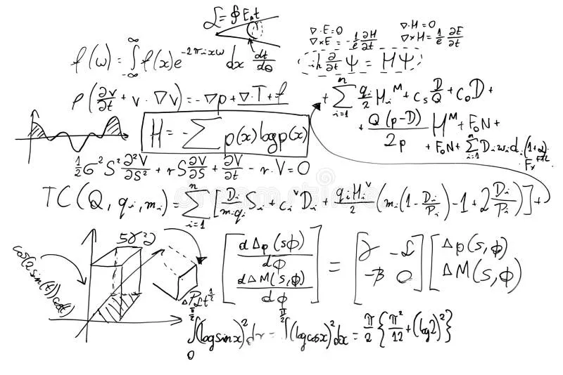
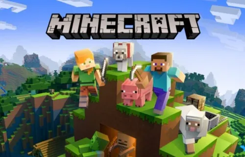

Discover a Journey Through Art and Innovation
Featured Projects
-
Meta Search Engine
Introducing the Meta Search Engine—the ultimate study companion designed to revolutionize your academic experience. Seamlessly integrated into your terminal, this innovative search engine delivers a clutter-free, efficient browsing journey by filtering out distracting links and intrusive ads.
Download(for windows) -

Data Locksmith
Unlock the ultimate in digital security with Data Locksmith. Seamlessly encrypt and decrypt your files in a user-friendly way using the world-renowned AES-256 encryption algorithm. Experience unmatched protection and peace of mind, knowing your sensitive data is secured by the best. Elevate your digital privacy with Data Locksmith—where advanced security meets effortless usability.
Download(for windows) -

Celestial Body weight Calculator
Embark on an astronomical journey with our Celestial Bodyweight Calculator, your gateway to the cosmos! This stellar tool transcends earthly constraints, allowing you to effortlessly calculate your weight across various majestic celestial bodies. Whether on the blazing surface of the Sun or soaring through the ethereal rings of Saturn, experience an illuminating insight into how gravitational forces entwine with your personal mass.
View Project -

Prime Number Generator
A robust algorithm designed to efficiently generate prime numbers within a specified range. It accepts start and end values, utilizing optimized algorithms like the Sieve of Eratosthenes to deliver high-performance computation.
View Project -

Ascending-order Generator
Tired of manually sorting numbers into ascending order? Introducing the Ascending-Order Generator - the ultimate time-saving solution!
View Project -
Descending-order generator
Tired of manually sorting numbers into descending order? Introducing the descending-Order Generator - the ultimate time-saving solution!
View Project -

Cipher Hasher
ntroducing our cutting-edge product, the Cipher Hasher! This innovative tool utilizes a complex hashing algorithm to encrypt data securely, providing top-notch protection for your sensitive information.
View Project -

Minecraft(ray-traced)
Dive into an unparalleled gaming adventure with Minecraft Ray-Traced Edition. Witness the blocky universe transform into a dazzling spectacle of richly detailed environments, thanks to cutting-edge ray-tracing technology. Every shadow, reflection, and texture is rendered with unprecedented clarity, bringing a new dimension of realism to your creations. Whether you're building epic castles or exploring vast caves, the immersive lighting effects will leave you spellbound. Upgrade your Minecraft experience today and see the game in a whole new light—literally.
View Project